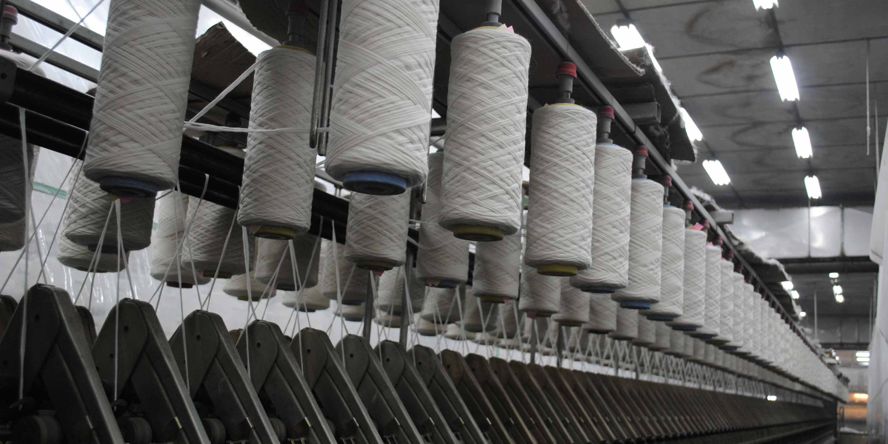
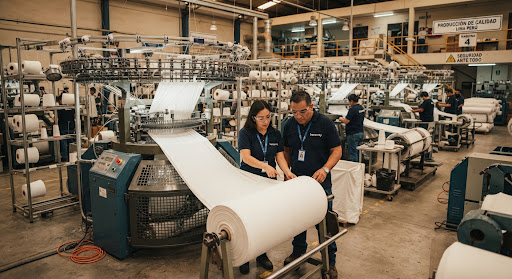
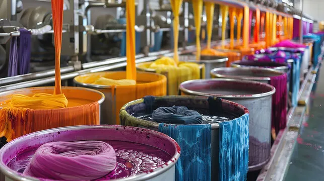
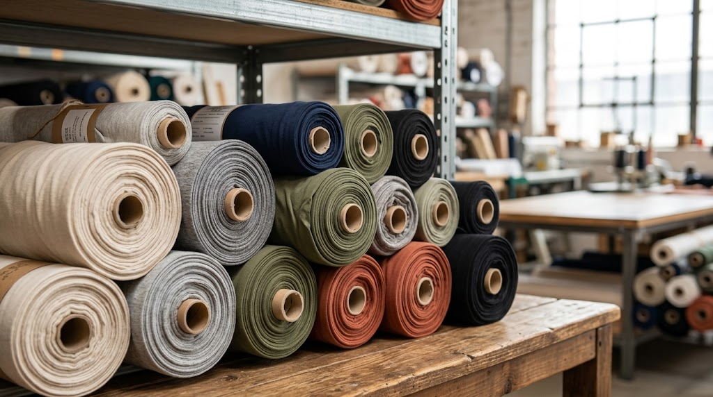

Tejido de Punto de Alta Gama: Suavidad, Rendimiento y Durabilidad
Especialistas en telas de algodón peinado y poliéster al por mayor y menor. Abastecemos talleres y marcas desde Gamarra con teñido reactivo y control estricto de encogimiento.
Del Hilo a la Tela: Nuestro Compromiso en Cada Metro
Garantizamos estabilidad dimensional absoluta: telas de punto que no se tuercen, no generan motas ni pierden la solidez de su color con las lavadas.

1. Selección de Hilado e Insumos Premium
Trabajamos exclusivamente con hilo de algodón peinado 100% peruano y fibras sintéticas vírgenes de alta tenacidad en títulos 30/1 y 20/1.
- check_circle Control de torsión e impurezas desmotadas.
- check_circle Textura sedosa y alta resistencia al rasgado.

2. Tejido de Punto en Telares Circulares
Procesamos el tejido con calibración electrónica de galga para lograr una tensión uniforme, densidad exacta y la caída perfecta que busca el confeccionista.
- check_circle Cero desvíos de trama ni inclinación de hilera.
- check_circle Excelente elasticidad y recuperación estructural.

3. Teñido Reactivo y Fijado Termofijado
Sometemos las telas a tintorería con colorantes reactivos de química limpia, garantizando tonos vivos e intensos que resisten el lavado continuo.
- check_circle Encogimiento estricto controlado menor al 3%.
- check_circle Fijación que evita la decoloración o teñido cruzado.

4. Inspección de Calidad y Empaque
Revisamos metro a metro en mesas de luz ultravioleta para detectar cualquier pilling o imperfección antes del pesaje y sellado.
- check_circle Despacho exacto por Kilo o Rollo sellado en polietileno.
- check_circle Etiquetado con ficha de rendimiento e hilo.
Mira cómo elaboramos nuestras telas en el taller
Transparencia total en nuestra producción industrial. Observa la tensión en telares circulares y el rigor de empaque por kilo y rollo.
Solicita tu Cotización al Instante
Indícanos los títulos de hilo, metraje o kilos requeridos y te responderemos en minutos con precios de escala mayorista.
Visítanos en Nuestra Tienda
Ven a revisar tactos, caída y cartas de colores en vivo. Despachamos rollos directamente desde nuestro almacén.
-
storefrontDirección Comercial
Av. Isabel La Católica 1579, Tienda 105 Galería Pasco Center, La Victoria, Lima, Perú.
-
callTeléfono / WhatsApp Directo
+51 970 107 842
-
mailCorreo Electrónico
textiljhatexaperu@gmail.com
-
scheduleHorario de Atención
Lunes a Sábado: 8:00 AM - 6:30 PM (Atención continua)